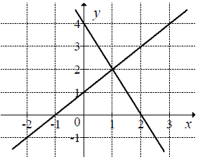

Na rysunku przedstawiono geometryczną interpretację jednego z niżej zapisanych
układów równań.  Wskaż ten układ.
A.\(\begin{cases} {y=x-1}\\ {y=-2x+4} \end{cases} \)
B.\(\begin{cases} {y=x-1}\\ {y=2x+4} \end{cases} \)
C.\(\begin{cases} {y=x+1}\\ {y=-2x+4} \end{cases} \)
D.\(\begin{cases} {y=x+1}\\ {y=2x+4} \end{cases} \)